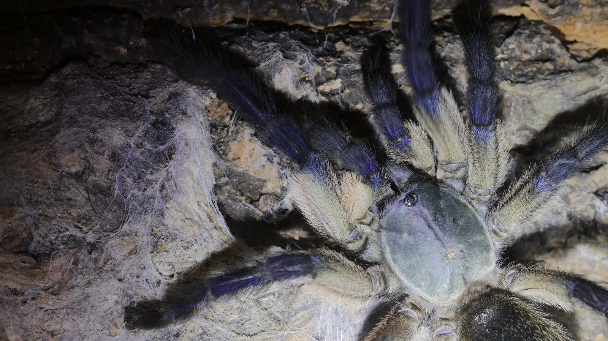

A terrestrial, burrow- and web-associated tarantula from the island of Socotra. Silk can connect the retreat, substrate, and nearby structures into a broad working area. [2]
Species profile · Belinda
Monocentropus balfouri
Meet Belinda
Belinda is the second Monocentropus balfouri currently in my care. Her updated portrait clearly shows her blue and cream colouring across webbed cork.

Scientific nameMonocentropus balfouri
FamilyTheraphosidae
Native rangeSocotra, Yemen
TaxonomyAccepted species
SexConfirmed female
In the wild
Natural history.
The blue-and-cream colour pattern is shared at species level, but posture, web placement, feeding, and molt history remain individual. That is why Belinda has her own page. [2]
Belinda's vivarium and Codex record are kept separate from Bella's. The page can grow with better portraits without merging the two animals' histories.
Taxonomy and range
Monocentropus balfouri is an accepted theraphosid endemic to Socotra, Yemen. A recent integrative revision retained the species in Monocentropus and documented its island habitat and burrows while reorganising related Arabian and African taxa. [1] [2]
Burrows, shelter, and activity
The integrative revision places M. balfouri in rocky montane grassland with scattered shrubs and small trees. Photographs show a ground burrow with extensive silk inside and around its entrance. Silk extends the sheltered area around the burrow and connects it to nearby surfaces. [2]
Feeding ecology
As general spider biology, movement supplies cues for prey capture, followed by venom use and external digestion. The webbed burrow provides the setting for observing this resident’s feeding. Wild social feeding remains outside the evidence cited here. [3]
Defence, senses, and movement
There are no urticating hairs. Concealment, speed, and defensive posturing are more relevant, while the contrasting blue-and-cream colour is most obvious only when the animal leaves cover. [4]
Conservation context
Status, trade & uncertainty.
IUCN evaluates extinction risk; CITES regulates international trade. They answer different questions, and missing data should remain visible. [5] [6]
Assessment not verified
A species-level IUCN category has not been verified for this profile. This is an evidence gap here, not evidence of low extinction risk.
Not CITES-listed
The species was not found in the CITES Appendices valid from 5 March 2026, reviewed on 3 November 2026. [6]
What the evidence supports
Monocentropus balfouri is endemic to Socotra. The revision documents its island habitat and distribution, while population trend and collection pressure remain unquantified here. Traceable locality and provenance records help connect captive animals to a clearer conservation picture. [2]
Make provenance visible
Document captive-bred provenance and keep Belinda’s record separate from Bella’s. Captive availability does not remove the importance of lawful origin.
Sources reviewed 3 November 2026. Historical assessment dates are retained. Assessment uncertainty is not evidence of low risk; national requirements may differ from CITES.
Life in the collection
Meet Belinda.
Belinda has her own profile because a shared species does not mean a shared history. Her vivarium video and Codex record document her as an individual, independently from Bella’s photographs and observations.
From Instagram
Posts & reels.
Personal observations
From the Codex.
Introvertebrates Codex
Belinda · care history
Time in care, feeding records, moults and measurements. These are observations from the Introvertebrates collection, not species-wide averages.
Collection records are not available here yet.
Private notes and identifying details are kept off the website.
Continue exploring
Related profiles.
Read further
Sources.
- 1. World Spider Catalog — Monocentropus balfouriView the source.
- 2. ZooKeys — integrative revision of Monocentropus and Socotran habitatView the source.
- 3. Australian Museum — prey capture and feeding (general spider biology)View the source.
- 4. Bertani & Guadanucci (2013) — morphology, evolution and usage of urticating setaeView the source.
- 5. IUCN — Red List Categories and Criteria, version 3.1 (assessment definitions)View the source.
- 6. CITES — Appendices I, II and III (valid from 5 March 2026)View the source.